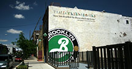
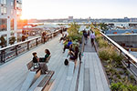
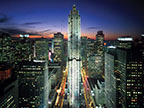
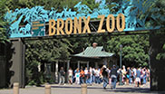
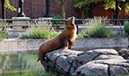

BROOKLYN BREWERY
Brooklyn Brewery is a brewery in Brooklyn, New York City, United States. It was started in 1988 by Steve Hindy and Tom Potter.Once an intimidating stretch of old warehouses and rough streets, Brooklyn's Northside has grown around the Brooklyn Brewery to become a cultural destination. Book Small Batch Tours and find out when to visit us on the weekends below, and check out our Events page for a complete list of public events in our Tasting Room.

2900 Southern Blvd., Bronx, NY
http://brooklynbrewery.com/
THE HIGH LINE
The High Line is a 1.45-mile-long (2.33 km) New York City linear park built in Manhattan on an elevated section of a disused New York Central Railroad spur called the West Side Line.[1] Inspired by the 3-mile Promenade plantée (tree-lined walkway), a similar project in Paris completed in 1993, the High Line has been redesigned and planted as an aerial greenway and rails-to-trails park.

127 10th Avenue, between 17th and 18th Streets.
161 10th Avenue, at 20th Street. 507 West 21st Street.
http://www.thehighline.org/
ROCKEFELLER CENTER
Rockefeller Center is a large complex consisting of 19 high-rise commercial buildings covering 22 acres (89,000 m2) between 48th and 51st Streets in New York City. Commissioned by the Rockefeller family, it is located in the center of Midtown Manhattan, spanning the area between Fifth Avenue and Sixth Avenue. It was declared a National Historic Landmark in 1987.

45 Rockefeller Plaza, New York, NY 10111
https://www.rockefellercenter.com
BRONX ZOO
The Bronx Zoo is a zoo located in the Bronx, a borough of New York City, within Bronx Park. It is the largest metropolitan zoo in the United States and among the largest in the world. On average, the zoo has 2.15 million visitors each year and is world-renowned for its large and diverse animal collection, and its award-winning exhibitions.[5] It comprises 265 acres (107 ha) of park lands and naturalistic habitats, through which the Bronx River flows.[

200 Eastern Pkwy, Brooklyn, NY 11238
http://bronxzoo.com/
BROOKLYN ZOO
A botanical garden in the borough of Brooklyn in New York City. Founded in 1910, and located in the Prospect Park neighborhood, the 52-acre (21 ha) garden includes a number of specialty "gardens within the Garden", plant collections and the Steinhardt Conservatory, which houses the C. V. Starr Bonsai Museum, three climate-themed plant pavilions, a white cast-iron and glass aquatic plant house, and an art gallery. The Garden holds over 14,000 taxa of plants and each year has over 900,000 visitors.

450 Flatbush Avenue, New York
http://prospectparkzoo.com/